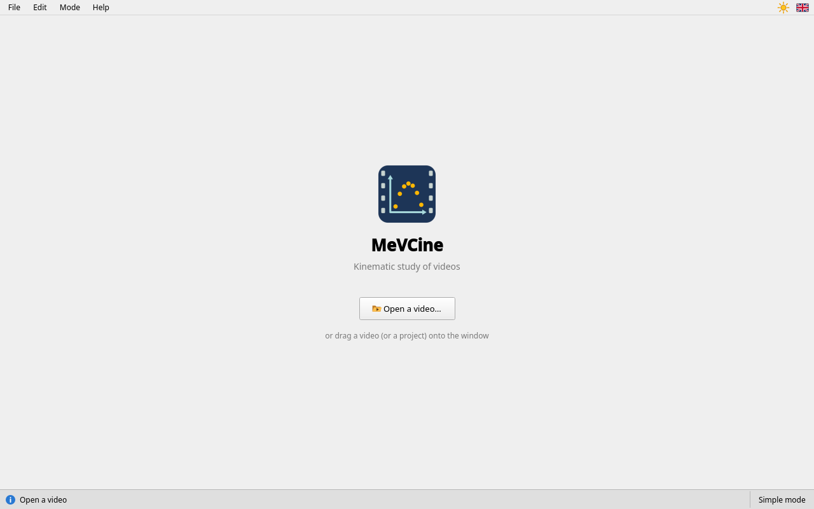

Getting started
Choose a mode, open your video and resume a project
First launch
Start MeVCine and choose Simple mode (step by step) for a first set of measurements. Expert mode gives direct access to tracking and analysis tools. On subsequent launches MeVCine uses the last mode selected.

Open your video
For a new session, choose Open a video… (Ctrl+O) or drop the recording onto the window. To continue saved work, open its project.
When the first frame appears, check the filename and frame rate at the bottom of the window. Browse a few frames to find the start of the motion and the ruler. Rotate a sideways image before calibrating. For slow-motion recordings, check the capture frame rate.


Switch modes
Open Mode. The tick identifies the active mode. Both modes share the same measurements and reference axes, including projects started with several objects.
Resume work
Keep the film and its .mevcine file in the same folder. Open the project with File › Open a project… or drop it onto the window. Check one recorded coordinate and the unit in its column heading.
MeVCine checks the recorded location, then looks for a matching copy with the same name beside the project. If asked to locate the file, choose the original recording. After an unexpected closure, use File › Recover previous work… and identify the session by its video and date.
Find a menu command
File contains open, save and export commands. Edit is for corrections and starting over. Mode selects the interface. Help opens the guide and information about the software. See all four menus and their illustrated commands.
The sun or moon changes the theme. The flag changes the language. F1 opens help for the current task.
Quit
Save the project with Ctrl+S, then close the window or choose File › Quit. If a message reports changes you want to keep, click Cancel to return to the project and save it.